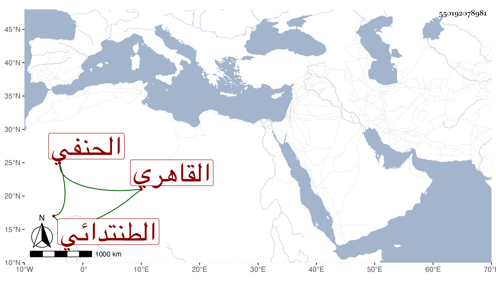

0902Sakhawi.DawLamic.ITO20230111-ara1.EIS1600.550192078981
Biography ID: 550192078981
364
محمد بن أنس بن أبي بكر بن يوسف ناصر الدين أبو عبد الله الطنتدائي ثم القاهري الحنفي . ذكره شيخنا في إنبائه وقال إنه كان عارفا بالفرائض أقرأها لجماعة وانتفعوا به مع كثرة الديانة وحسن السمت والمحبة في الحديث بحيث كتب منه الكثير وسمع من ناصر الدين الحراوي وغيره . ومات في سنة تسع ولم يكمل الأربعين . وقال غيره أنه مات في ربيع الآخر وإنه كان بارعا فقيها نحويا أصوليا عارفا بالفرائض والحساب تصدر للإقراء سنين مع الديانة والصيانة ومداومة خدمة العلم . قلت وكان إمام المجلس بالخانقاه البيبرسية ، وممن أخذ عنه بلديه الشمس محمد بن عبد الرحمن الطنتدائي وأظنه تلقى الإمامة عنه فقد كانت له به عناية بحيث انه حنفه بعد أن كان كأخيه شافعيا وأخذ عنه الفقه والفرائض والحساب وكذا أخذ عنه الفرائض والحساب الجلال المحلي محقق الوقت لكونه كان من صوفية البيبرسية . وذكره المقريزي في عقوده وقال أنه برع في الفقه والفرائض والحساب والعربية وتصدى للأشغال سنين مع الديانة والصياغة والإنجماع عن الناس والإقبال على ما هو بصدده ، صحبته سنين ونعم الرجل رحمه الله .
